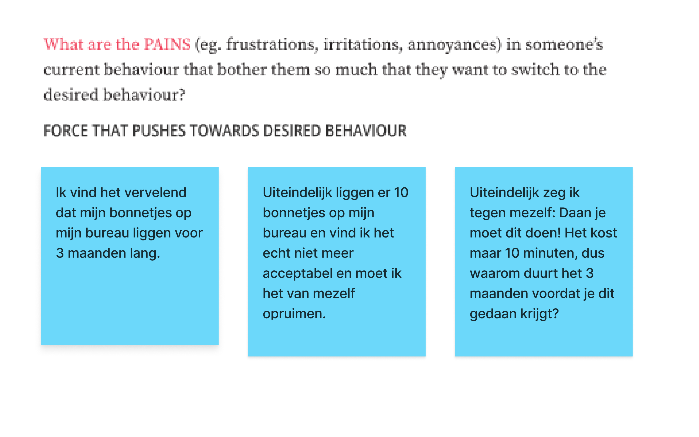

redesign WieBetaaltWat
for receipt collecters to arrange and split costs
The assignment
During my behaviour design semester I had three weeks to make a product for one human. That human is Daan, a good friend of mine. The assignment is to analyse his behaviour and design a sollution to the problem. It can’t get more Dutch than this assignment!
Daan’s problem is that the guy is too social and lazy at the same time. He, me and other friends like to have diner together. Somehow it is our habit to eat at his place. Automatically he gets the groceries as well. Which means he pays for it. Eventhough Daan loves us, he doesn’t want nor need to pay for dinner everytime. But Daan is also, in his words, lazy enough to let it be. That’s how he ends up with all the receipts on his desk and the costs for the groceries.
My role
My role was being the researcher and designer. The first week was full on research, the second week was a design week and the final week I was the researcher again. During the whole period, I conducted feedback from all kinds of sources. For example Daan's friends.
Final result
The three weeks came to an end and I made a redesign for the WieBetaaltWat app. This is an app where you can split bills. Daan is already familiar with this app and uses it already. To make it as simple as possible, I made him do two steps to get to his goal.
- Scan the receipt.
- Pick the groceries / items you want to add to the split.

Try the new feature in the prototype below.
Process
Week 1: researching the behaviour
The first week evolved around getting to know Daan’s current behaviour and the problems it causes. I interviewed Daan for an hour and filled in the Behaviour Design canvas developed by SUE Behaviour Design. It became clear that Daan thinks filling in the costs in the WieBetaaltWat app is too much of an effort. His anxiety is that it causes him to get out of his daily flow. He doesn’t experience enough financial pains to change this behaviour.
The first question is “Who” am I trying to influence?
The first question is “Who” am I trying to influence?
But what is the desired behaviour?
And what is his job-to-be-done but doesn't he get done?
Then, I examined his pains, gains, anxieties, and habits related to the behavior. The pains describe the discomfort he experiences due to current behavior, the gains are the benefits that the desired behavior would bring, the anxieties are the discomforts that Daan anticipates with the desired behavior, and habits describe the habits surrounding the current situation.
Which pains does Daan experience in his current behaviour?
Which gains does Daan experience in his current behaviour?

Which anxieties does Daan expect in the desired behaviour?
Which habits are involved in Daans current behaviour?
week 2: design for the desired behaviour & testing the idea
Week two started with thinking of a solution and sketching a design. Instantly I thought of redesigning WieBetaaltWat to make it easier to split the costs. First I did a user trip and found that the steps to split costs are actually a bit much. I could imagine this might be the reason Daan doesn't get to the desired behaviour.
User trip
Sketches of the new design
While thinking of a new flow, I realised an extra feature could make it more complete. Instead of redesigning, I sketched a new feature.

week 3: test the product
I tried testing the idea in a hidden way. That way I tried conducting insights without the answer being socially desired. I’m one of Daan’s friends, so he’s likely to give socialable desired answers. To prevent that, I recreated a fake Instagram advertisment.
He responded in a very enthousiastic way. He liked the idea and was disappointed the Play Store didn't let him update the app. He said: "I'm checking if the app is available for an update tomorrow again."
Reflecting on the process
Only three weeks from 0 to a design is a bit short, but that’s what made it all fun. The outcome is positive and promising. The way of working was pretty much the same as in other projects, but a lot faster and focused on the basics. If I had more time, I probably would have had a whole different process. It could be more complete.
other work
A11y
delve into accessibility

Rythm Ritje
graduation project